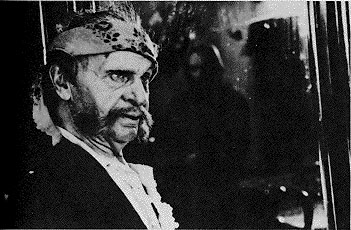

Page index / courses
part2.shtml

PART TWO
- * BOOK FOUR - Heartaches
- Summary
- Analysis
- * BOOK FIVE - Pro and Contra
- Summary
- Analysis
- * BOOK SIX - The Russian Monk
- Summary
- Analysis
BOOK FOUR - Heartaches
Summary
1. Father Zossima prepares for death, and many expectantly await a miracle. He talks about his beliefs and refers to Alexey as both ŇsonÓ and Ňorphan boyÓ. He encourages Alexey to return home to help his family. We see Father Ferapont, a monk in the monastery who does not believe in ZossimaŐs love and honesty creed. He is a believer in fasting and fear. In his ideaology one should live constantly aware of devils around them. 2. Alexey returns home and talks with his father who is alone. We learn that Ivan wants Katerina for himself. Fyodor talks alot about Ivan and his distrust of him. He says that he does not know Ivan at all, that he is not one of them, and that he would be afraid if Ivan were to love. He says that Alexey is the only one with whom heŐs had his Ňgood moments,Ó as well as the only one he does not fear. 3. Leaving his fatherŐs house Alexey runs into a group of young boys who are throwing stones at another young boy. Alexey becomes involved because of his nature and his love for children. When Alexey tries to interfere, the young boy at whom they were throwing rocks fights back and then runs. Alexey catches up with him, but the boy resents him, and bites his hand. 4 -5 Alexey goes to Mrs. KhokhlakovŐs house to meet with her and Lise. There his wound is bandaged. Lise tells Alexey, unconvicingly, that her letter was a joke, and should be returned to her. Alexey does not return it, and tells her that when she is older they will marry. He will do this on the request of Zossima. Alexey sees Katerina, who also lives with Mrs. Khokhlakov. Ivan is with her at the time and Mrs. Khokhlakov tells him that the situation is ŇdreadfulÓ and a Ňfanatstic comedy.Ó Alexey goes to see Ivan and Katerina. Katerina has informed Ivan that she loves Dmitry and will stand by him no matter what happens. To her it has become and issue of honor and duty. She wants, no matter how long it takes or how it may come about, to be DmitryŐs only means of happiness. She wants to be his Ňgodess.Ó Ivan tells her that in another woman this kind of sentiment would be neurotic, but that it is not with her, for she shall make herself a martyr and be rewarded later. Alexey attempts to convince her that she loves Ivan and should let Dmitry go, but it does not work. Katerina responds by calling him a Ňreligious half-wit.Ó His exhortation to love is answered in anger. Even Ivan tells him that Katerina loves Dmitry and only keeps him out of revenge. He says that the next day he will leave for Moscow. Leaving he too quotes from Schiller. After Ivan leaves, Alexey is struck with grief. Katerina comes to him with two hundred rubles and asks a favor of him. She asks him to bring it to a man whom Dmitry has publicly humiliated. In anger Dmitry dragged the man, a retired army officer named Mr. Snegiryov, by his beard down the street. The whole time his young son begged for mercy for his father, and was met with laughter. To atone for this in some manner, and to be a sister to this man who has suffered humiliation from the same man who humiliates her, Katerina asks Alexey to offer the two hundred roubles to him on her behalf. 6 -7. Alexey leaves Mrs. KhokhlakovŐs house and seeks out Mr. SnegriyovŐs dwellings. He finds him, and his family. His wife he describes as a Ňweak-minded cripple,Ó and one of his daughters is a crippled hunchback. The other daughter is a student who has been forced to stay home and help provide for her family. She deeply resents this. The captain also has a young son, Ilyusha, who is the same child who bit Alexey in the street. Ilyusha assumes that Alexey came to discuss the bite, which Alexey now understands as a reaction against a Karamazov. The captain and his family live in poverty, and it is only his son who is clearly devoted to the captain. Alexey talks with the captain and hears his story. The dispair, disgrace and poverty from which the captain and his family suffer, are great. When Alexey reveals his purpose for the visit, to give two hundred rubles, the captain is overwhelmed. He talks about all the ways he could use the money to ease the lives of his struggling family. He suddenly gets angry and changes his mind. He can not bring himself to accept money to repair his injured honor. His main reason for refusal is the respect of his son, which he desperatly needs. He throws the money on the ground and leaves. Alexey takes it to return to Katerina. Analysis
Book Four places Alexey firmly in the position of confessor. Like Zossima within the religious community, Alexey within his own family is the one turned to for confession. Within book four Alexey is actively comforting those suffering around him, for they are all suffering to a certain extent; Fyodor, Dmitry, Ivan, Katerina, and Captain Snegiryov. For at least one moment they all use Alexey for relief. Confessing to him seems to help cleanse and ease them. Alexey moves from person to person, giving them his ear and his compassion. Clearly he has followed the teachings of Zossima, and loves actively. He is also working to bring about love, even if his efforts are not successful. He encourages Ivan and Katerina to love and marry each other only to be laughed at and called a Ňreligious halfwit.Ó He does this work outside of the monastery as Zossima has instructed him. He does his work for Christ within the world of his family and their situation. He even carries out the acts of compassion on the behalf of others. He brings the two hundred rubles to Captain Snegiryov for Katerina. This work Alexey does in book four is more trying, and worthy than were he to stay within the confines of the monastery. He seeks to comfort even those who do not come to him and even reject his kindness. Particularly, it is Ilyusha who in his youth hates Alexey for being a Karamazov, and thus a source of his fatherŐs humiliation, and rejects his compassion. AlexeyŐs efforts to reach out to this young boy further illustrates his followings of Zossima and Christ. He, like The Idiot and Christ, and Dostoevsky himself cherishes children for their absolute innocence. Book four helps place Alexey firmly in this tradition, and in doing so emphasises the disparity between his and othersŐ nature, especially Fyodor.
BOOK FIVE - Pro and Contra
Summary
1. Alexey returns to Mrs. KhokhlakovŐs house to return the money, and finds that Katerina has become ill, and is unconscious. Alexey relates the outcome of his visit to Lise, who listens with rapture. They talk about their earlier interaction, and they again profess their love, and plan to be married. They also talk about AlexeyŐs brothers and father, whom he tell Lise are destroying themselves and each other. He goes so far in his sadness to mysteriously say that he does not believe in God. His sadness, he says, is in part because Zossima, his spiritual father, is dying. After their talk, Lise makes the sign of the cross to bless Alexey, and he leaves promising her that they will be happy in the future. When Mrs. Khokhlakov overhears their plans to marry she tells Alexey that it is a bad idea, he assures her that the marriage is far into the future and that she should not worry. 2 - 3. Alexey returns home to try to find Dmitry. He hears Smerdyakov with a guitar, singing to the daughter of the housekeeper. He sings to her, and talks of his hate for Russia, and his wish that he had never been born, but rather died in the womb. Alexey approaches them and asks where Dmitry is. Smerdyakov is almost insulted by this question but tells Alexey that Dmitry is to dine in town with Ivan that evening. Alexey goes immediatley to the inn and encounters Ivan. They sit down together and begin to speak to each other sincerely, in an effort to Ňget acquainted.Ó Ivan says that he respects Alexey, and Alexey responds that he finds Ivan a mystery. Ivan talks about his desire for life, that no matter what despair seizes him, it can not quench his thirst for life. He also says that he wants to be AlexeyŐs friend because he has no friends, and also says to Alexey, Ňperhaps I accept GodÓ but does not accept the world which God has created. He talks about God and man extensively, and when he is finished, he calls it his confession. He ends by saying that he has no intention of corrupting Alexey, and pushing him off of his foundation, but instead he perhaps wishes for Alexey to heal him. With that he smiles like a child. Ivan also talks about love, and how man can not love that which is too close. He can not love if he must see the object of his love. Men can not love like Christ for Christ was a god and men are not gods. He also talks about the suffering of children. For him that proves the absolute existence of evil, and lack of harmony under God. Man is cruel which is made clear by the suffering of children, for children havenŐt sinned so they must suffer for adults. Man, Ivan says, is far crueller than any beast, and that if man invented the devil, he did so in his own likeness. In every man he says, is Ňthe beast of irascibility,Ó and it is for this reason many men delight in torturing especially the innocent. To him knowledge of good and evil gained by the fall, is not worth the suffering of one innocent creature, and while that suffering continues he can not believe in the eternal armony of the universe. To al this, Alexey responds softly that it is rebellion. This saddens Ivan who says that one can not continue to live in rebellion, yet Ivan wants to live. He asks Alexey if he would be the man to create a world where all men would be happy if it required that one innocent child would have to be tortured to death. Alexey says he would not, but reminds Ivan that Christ was without sin, and he died so that he can forgive everything. Ivan then responds that Christ is the subject of a ŇpoemÓ he has made up called ŇThe Grand Inquisitor.Ó 5. IvanŐs ŇpoemÓ takes place in Spain during the sixteenth century and the Spainish Inquisition. Ivan talks about how the believers in Christ had been longing and praying for ChristŐs return for 1500 years, and that he longed to return to his people. He quotes a Russion poet, Tyutchev who proclaimed that Christ had returned and walked among his people, and this, Ivan says, is true. This is where his story begins, in Seville, Spain. Christ comes down to earth, to Seville, during the Spanish inquisition, and everyone recognized him as Christ. People can not help but love and follow him. He heals the sick, makes the blind see, and raises the dead in his compassion. The Cardinal, the Grand Inquisitor witness the raising of the child from the dead, and orders that this man be arrested. The Grand Inquisitor visits Christ in his cell that evening and is angry with him for having returned. To the Cardinal, ChristŐs reappearance is meddling in the churchŐs realm. He tells Christ that all power now lies with the pope, and not with him. The pope, and the earthly insititution of the church have been entrusted with the freedom of the people. They, he says, can not handle the burden of free will, it is unendurable. The church has rid the people of their freedom in order to make them happy. They will become slaves to be fed. The church will feed them and deceive them. They will claim to feed men in the name of Christ. This is what Christ should have done the old man says. He chose the banner of Ňfreedom and the bread from heavenÓ instead of the Ňbanner of earthly bread.Ó Man suffers because he does not have the strength to endure free will, or the vague things he must accept. Christ should have been more miraculous to give man something to hold onto. He needs stabilty and security which is what the earthly church offers. The Grand Inquisitor admits that he is on the devilŐs side. They joined the devilŐs side when the papacy siezed earthly power. They took Ňthe sword of ceaser.Ó The Grand Inquisitor says that he has sacraficed himself to make the masses happy in their earthly existence. ChristŐs way only allows the strong to be saved. Christ has not said a word during the Grand InquisitorŐs speech, and says nothing afterwards. He simply kisses the old man on his withered lips. At this moment the Grand Inquisitor forgets his promises to burn Christ at the stake, and sets him free, telling him never to come again. Alexey argues over the story with Ivan, they do not agree in the end, and Alexey simply gets up and kisses his brother on the lips. To this Ivan responds Ňplagarism!Ó They part, and before they do, Ivan promises as a Ňdeclaration of loveÓ to not lose his love for life, and for the Ňsticky little leaves.Ó 6 - 7. Leaving his brother, Ivan is depressed and morose. He meets Smerdyakov and realized that he had been in the back of IvanŐs mind. He thinks about his resentment and intense dislike of Smerdyakov. Ivan stops to talk to him anyway, and they begin to talk about Dmitry, Fyodor and Grushenka. Smerdyakov talks of father and sonŐs rivalry for Grushenka. He also tells Ivan of the secret signals he has been instructed to use if Grushenka should come to see Fyodor. He admits that he has revealed these signals to Dmitry who is also eagerly watching and waiting for Grushenka. Perhaps, Ivan suggests, Smerdyakov is trying to give Dmitry a way to get to Fyodor through the secret signals. Smerdyakov himself fears he will be taken for an accomplice should something happen. He also says that he fears what will become of Dmitry and his father. He says that Dmitry is in desparate need of money and knows of three thousand rubles in an envelope marked for Grushenka. Even Ivan doubts Dmitry would murder for money. He also says that he his sure he will have an epilieptic fit the next day, and suggests that Ivan leave town. Deciding that he can not be his brotherŐs keeper, Ivan agrees he will leave for Moscow the next day. Smerdyakov says that would be best, but that he should go to Chermasnya, which is much nearer. Ivan goes to bed but cannot sleep. The next day, at his fatherŐs urging, he decides to go to Chermasnya to sell some wood for his father. When he tells Smerdyakov of this change in plan, he whispers, ŇitŐs nice to have a chat with a clever man.Ó When Ivan leaves, he feels happy and wants to leave the past behind him. At his fatherŐs house, Smerdyakov falls into a severe epileptic fit. Fyodor, alone in the house, locks himself in and waits for Grushenka. Analysis
The first part of book five shows AlexeyŐs developing relationship with the young Lise. He has promised to marry her and has even sealed it with a kiss on her lips. Alexey says he is going to marry because it was the request of Zossima, and that he could think of no one to make a better wife than Lise. The bulk of book five is devoted to the understanding of IvanŐs ideas nad beliefs. He tells these all to Alexey over dinner one night in the inn. It is the two brothers chance to know each other before Ivan leaves. Ivan says that he respects Alexey, for his firm belief, and it is mostly for this reason that he wants Alexey to know and understand what he himself believes. In this scene, which along with the Grand Inquistitor of the next scene make up a large part of the theological issues in The Brothers Karamazov. The first thing Ivan says is that he has a great love for life, even if it is against logic. They talk about the question of God and immortality, and Ivan admits that Ňperhaps I too accept God,Óbut not the illogical and suffering-filled world He has created. Unless Ivan sees the miraculous healing of the world, the great atonement, he can not accept GodŐs world. There is too much brutality and suffering innocence for Ivan to accept this world as GodŐs. Men do not and can not love the way Christ did, and the way Christ wants man to love his neighbor. His nature is too cruel, more cruel than any animal. Specifically, he talks about the suffering and torture of children, the innocent who have not yet sinned. Here again we see the sentiments of Dostoevsky expressed. Ivan asks Alexey if he would be responsible for a world where all men would be This, Ivan calls his ŇconfessionÓ to Alexey, and says that he does not wish to ŇcorruptÓ or push Alexey Ňoff the firm foundation on which he stands. Instead, he says perhaps it is he who would like to be ŇhealedÓ by Alexey. Alexey is now not only the acknowledged confessor, but is seen as healer. He can mend the heart and spirit of his world weary brother. Alexey tell him this is rebellion, which Ivan says is too bad, because one can not continue living in a state of rebellion, and he loves life. This is a suggestion that if Ivan is going to continue to live he will have to undergo some sort of spiritual change. Ivan also makes his brother see that he is not illogical, for even Alexey can not admit he would create a world which men have peace and happiness, but that one innocent creature would have to be tortured to attain this. To this Alexey says that Christ died to attone for all sins, and Ivan responds with ŇThe Grand Inquisitor.Ó ŇThe Grand InquisitorÓ is essentially about the wordly church, and how itŐs become an earthly power which accepts the obediance of man who can not endure the freedom Christ has granted the world. It is a story about the conflict between ChristŐs offering to man and the churchŐs offering to man. One is the burden of freedom, the other the yoke of bondage. The church in its role as ŇmasterÓ has joined forces with Satan, but the Grand Inquisitor insists, they have done it for the happiness of man. The way of Christ is too much for man, he needs earthly not heavenly bread. This story serves in part as a vehichle for DostoevskyŐs anti-Catholic sentiment. The Cardinal in IvanŐs story admits to being on the side of the devil, which is the greatest slander he could make. He has accused the Roman Catholic church, through the tale of the Grand Inquisitor, of being with the devil, and as having usurped the power and the neccessity of Christ himself. They deceive the people openly, claiming to represent Christ but the Cardinal says himself that Christ will only meddle with his work. To prevent this the Cardinal plans to burn Christ as he would, and has, burned many other ŇhereticsÓ in the course of the Spanish Inquisition. A great deal of ŇThe Grand Inquisitor revolves around ChristŐs refusal of the three temptations offered him by the devil in the desert. This is in St. Luke 4:1-13. The Cardinal says that if Christ had accepted the temptation, he would have been accepting security for man through bread, instead man was burdened with freedom. He must choose to believe in Christ against logic. If Chirst had accepted temptation, he would have given the people something miraculous to hold on to, and believe in, as well as stability. Christ determined the fate of man through his rejection of temptation. That, he says, is why man needs to offer his obediance to the church. The mass of men are too weak to believe or be saved in another way. ChristŐs way is only for the strong, who still must suffer for it, the masses are weak too weak for that way. The Church has geven man Ňmiracle, mystery, and authority,Ó although falsely, in the name of Christ. Man has given the church his faith an dobedience, and on this the church is building an earthly empire. ChristŐs return to the Cardinal is simply an intolerable interruption in their work, and so he must be burned at the stake. At the end, as we see, Christ without speaking kisses the old man on his lips, and is set free, told to leave and never return. Alexey mimic this very act to his brother at the end of their meeting, which Ivan calls Ňplagarism.Ó It is in his compassion, and desire to soothe and comfort that he does this. He knows that words will not change his brotherŐs mind. He has obviously suffered and thought and thus come to this conclusion. There is no easy answer for the questions of faith and freedom. The end of book five shows the character of Smerdyakov to be deeply involved in the disputes between Fyodor and Dmitry. He is feigning loyality to them both, and is well aware that something terrible will transpire between them. He plans, or suggests that he will be in an epilieptic fit when it will happen, as for Ivan, Smerdyakov suuggests that he leave town. Knowing something is going to happen, Ivan leaves anyway. He has clearly made the decisoin not to be his brotherŐs keeper. The scene is set for murder, with all the servants busy, Fyodor locked in his house, and Dmitry armed with the secret signals. It is evident from the last pages of book five, that Smerdyakov and Ivan both are going to be in some way responsible for the death of Fyodor.
BOOK SIX - The Russian Monk
 Summary
Summary1 - 3. Book six is the complete story of Father Zossima, who is now on the brink of death, with many people gathered around him listening and waiting for a miracle at his death. He explains to Alexey his bow to Dmitry, saying that he bowed down Ňto the great suffering that is in store for him.Ó Zossima continues to urge Alexey to live and work in the world among people. He wishes that for Alexey who reminds Zossima of an older brother whom died young. This brother was a freethinker who underwent a great conversion months before he died at age seventeen. He died a believer with great faith and a strong desire to love all creatures as Christ did. His love for his young novice is apparent. The BibleŐs influence on Zossima is discussed. He tells the story of his own transformation which took place around a duel he challenged a man to in his youth. The duel was for the affection of a woman. The morning of the duel he has an awakening which reminds him that he must love al of GodŐs creatures. To avoid hurting the man in his duel, Zossima let his opponent shoot, but dropped his own gun without firing. Zossima also talks about some confessions he has received from men burdened with guilt. To them he said that truth is power. He talks about how the Russian monks are the truest companions and guides of the common people who truly have faith. He speaks of equality for all people and the spreading of ChristŐs message. ŇLove man even in his sinÓ he says, and love them without judgement. He stresses his message of love as always, love every creation he says. Finally we hear about his ideas on hell, which is only spiritual, and for people who have voluntarily accepted torment as their fate. They reject forgiveness, damn God, themselves and life. After this, the narrator says AlexeyŐs manuscript end, for it was from him that the information on Zossima came. Then Zossima dies. Analysis
Zossima, as a Russian monk is seen as the salvation of the Russian people. His significance can not be underestimated in his role as a monk, as well as his role as AlexeyŐs spiritual leader and father. Zossima, near his death, does not lessen in significance, but a whole book is dedicated to the story of his life and his beliefs. We see that he is a man who has come to his faith through a great deal of thought and anguish. He has lived without real faith, and has come to it through a conscious dedication of himself. He has suffered which for Dostoevsky is purification. For this reason he acknowledges and bows down to Dmitry, who himself will suffer. Man should take upon himself the suffering and the responsibility for sin of all men. There is also the suggestion of a shared sufering, which gives hope that Dmitry too might turn to faith. The faith of Zossima is the ideal, and is in stark contrast to the ideas which Ivan has come to. His message remains one of love and truth as found in the Bible are the two greatest and most essential elements of faith and salvation. Love and truth bring belief in that which we can not understand. That is what Ivan does not accept, that love and truth will result in believing that which is an inexplicable mystery.